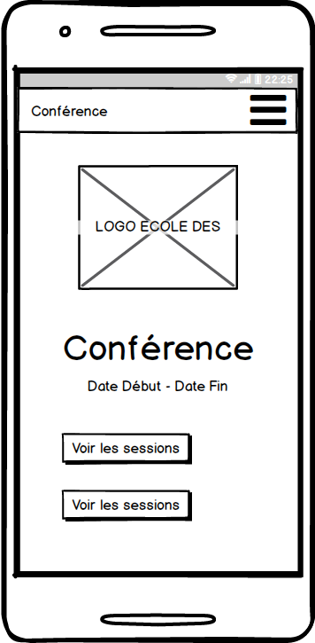
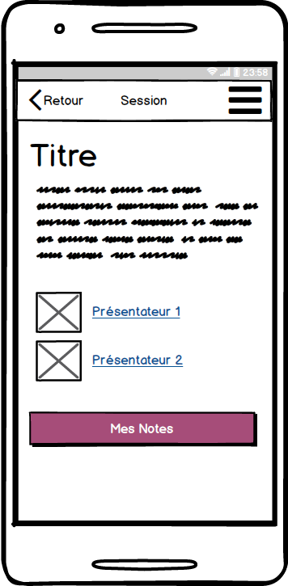
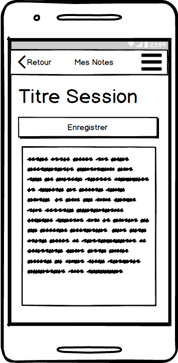
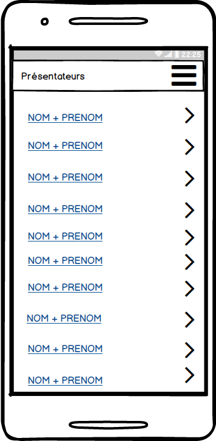

Application
- Créer les différentes pages de l'application.
Page d'accueil
Remarque sur les maquettes :
- Les boutons sont : "Voir les sessions" et "Voir les présentateurs".
- Le menu "A propos du téléphone" n'est pas nécessaire pour cet exercice.


Liste des sessions

Détails d'une session

Le bouton Mes Notes conduit à une vue permettant de prendre des notes.

Stocker les notes dans le LocalStorage.
Vues présentateurs
